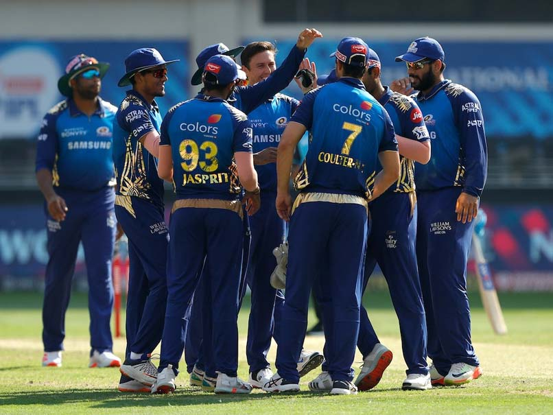

The Mumbai Indians are a franchise cricket team based in Mumbai, Maharashtra, that competes in the Indian Premier League. Founded in 2008, the team is owned by India's biggest conglomerate, Reliance Industries, through its 100% subsidiary IndiaWin Sports. Since its establishment, the team has played its home matches in the 33,108-capacity Wankhede Stadium in Mumbai. In 2017, the Mumbai Indians became the first franchise to cross the $100 million mark in brand value among the IPL franchises. The brand value of Mumbai Indians, in 2019, is estimated to be around ₹809 crore (roughly $115 million), the highest among all the IPL franchises for the fourth consecutive year.
Mumbai Indians won the 2011 Champions League Twenty20 after beating Royal Challengers Bangalore by 31 runs in the final. The team won the double by winning its first IPL title, in 2013, by defeating Chennai Super Kings by 23 runs in the final, and then defeated the Rajasthan Royals by 33 runs to win its second Champions League Twenty20 title later that year. They won their second IPL title on 24 May 2015 by defeating the Chennai Super Kings by 41 runs in the final and became the third team to win more than one IPL title. On 21 May 2017, they won their third IPL title by defeating the Rising Pune Supergiant by 1 run in a thrilling final, thus becoming the first team to win three IPL titles. While playing the tournament, they won their 100th T20, becoming the first team to do so. In 2019, they repeated the same feat as they won a record breaking fourth IPL title, by beating CSK by just 1 run on 12 May 2019 in the IPL Final. They became the first team to win the IPL title for the fifth time, by beating Delhi Capitals by 5 wickets on 10 November 2020 in the IPL Final. Mumbai Indians are currently captained by Rohit Sharma. Mahela Jayawardene was appointed as head coach of Mumbai Indians before the 2017 season. Sharma is the leading run scorer of the team while Lasith Malinga is the leading wicket taker of the team and the IPL as well.
At the 2010 players auction, Mumbai Indians bought Trinidadian all-rounder Kieron Pollard for $750,000 following a secret tiebreaker. After the auction, they signed up ten uncapped Indian players out of whom seven were former ICL players. Former India cricketer Robin Singh was named as the head coach of the team as Pollock took up the role of bowling coach. Mumbai had to shift their home venue to Brabourne Stadium for the season since the Wankhede was undergoing renovation to host some matches of the 2011 ICC Cricket World Cup. Mumbai won seven of their first eight games to take the top spot in the points table. Their success was mainly due to the efforts of Tendulkar, Malinga, Harbhajan, Ambati Rayudu and Saurabh Tiwary. They won three of the remaining six league games and finished with 20 points from 14 games at the top of the points table. They beat the Royal Challengers Bangalore by 35 runs in the semi-final, thanks to Pollard's all-round efforts (33* from 13 balls, and 3/17). At the final, they were defeated by the Chennai Super Kings by 22 runs. The Mumbai team management was criticised for the "strategic errors" during the final such as sending Abhishek Nayar and Harbhajan at batting positions 3 and 4 respectively while Duminy and Pollard were sent at 7 and 8. Mumbai skipper Sachin Tendulkar, who scored 618 runs at an average of 47.53 and strike rate of 132.6, won the Orange Cap for scoring most runs in the season. Mumbai qualified for the 2010 Champions League Twenty20 where they were eliminated in the group stage with two wins and two defeats in four matches.
| Year | Indian Premier League | Champions League T20 |
|---|---|---|
| 2011 | - | Champions |
| 2013 | Champions | Champions |
| 2015 | Champions | - |
| 2017 | Champions | - |
| 2019 | Champions | - |
| 2020 | Champions | - |